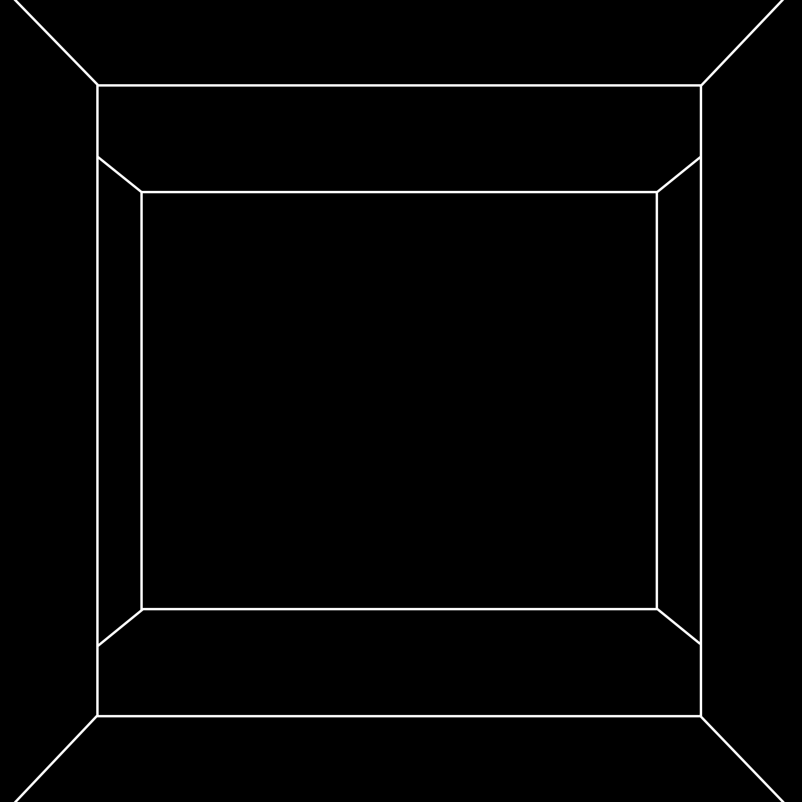

I have flipped through books, reading hundreds of opening and closing lines, across ages, across cultures, across aesthetic schools, and I have discovered that first lines are remarkably similar, even repeated, and that last lines are remarkably similar, even repeated. Of course in all cases they remain remarkably distinct,
because the words belong to completely different poems. And i began to realize, reading these first and last lines, that there are not only the first and last lines of the lifelong sentence we each speak but also the first and last lines of the long piece of language delivered to use by others, by those we listen to.
And in the best of all possible lives, that beginning and that end are the same: in poem after poem I encountered words that mark the first something made out of language that we hear as children repeated night after night, like a refrain: I love you. I am here with you. Don’t be afraid. Go to sleep now.
And I encountered words that mark the last something made out of language that we hope to hear on earth: I love you. I am here with you. Don’t be afraid. Go to sleep now.